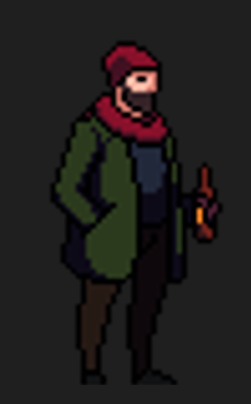
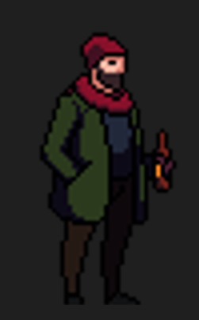

Personagens
Nesse jogo, voce controlara o pesonagem com codinome VOID, um garoto treinado por seu Mestre e irado pelo roubo da espada.

Seus inimigos serão bebados locais e drogados. Massacre todos.
Após treinar por muitos anos a arte da espada com seu Mestre já falecido, um grupo de bebados invadem o dojo vazio e roubam a espada do seu antigo Mestre! Embarque em uma jornada e recupere-a custe o que custar.
JogarNesse jogo, voce controlara o pesonagem com codinome VOID, um garoto treinado por seu Mestre e irado pelo roubo da espada.
Seus inimigos serão bebados locais e drogados. Massacre todos.
Ben Fox - Break it down.
Sobreviva, NAO seja tocado. Um toque, significa morte.
Voce deve exterminar todos os inimigos na fase, para que eles nao voltem as ruas.
Recupere a espada do seu dojo!